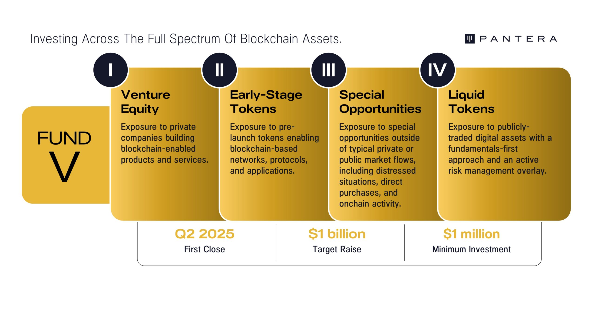

TABLE OF CONTENTS[1]
1. Crypto: Picks and Shovels For The AI Gold Rush
2. AI Agents: Programs Using Programmable Money
4. Unichain: The Fat App Thesis Renaissance
5. Token Value Accrual Proposals and Implementations
6. Opportunities In AI And Crypto :: Thematic Call Highlights
CRYPTO: PICKS AND SHOVELS FOR THE AI GOLD RUSH
By Matt Stephenson, Research Partner and Ally Zach, Research Engineer
“AI is indefinite abundance and crypto is definite scarcity.” This observation by Sam Altman in 2021 has since become a mantra for enthusiasts of both technologies. And at first glance, abundance seems more impactful than enforcing scarcity, suggesting AI might be the more prudent investment. Indeed, Nvidia’s market capitalization is larger than crypto as a whole.
But Altman’s statement calls to mind Adam Smith’s “Diamond Water Paradox.” Smith noted that while water is essential for survival, its abundance makes it nearly worthless in exchange.
Conversely, diamonds, with little practical use, command high value due to their scarcity. This paradox suggests that even if AI becomes as vital as water, it might still have limited market value. Crypto’s scarcity, by contrast, is more strategically important and valuable than it might initially appear.
Large Language Models (LLMs) have achieved remarkable milestones, including passing the Turing test and reportedly outperforming humans on standard IQ tests. But this raises the question: if humans can’t tell the difference between humans and intelligent AIs (in the Turing test), can they tell the difference between intelligent AIs? If humans can’t discern, then future gains in AI performance can have diminishing returns in terms of perceptible benefits for a consumer.
Just as the leap from 4K to 8K TV resolution offers minimal visible improvement to the average viewer, the difference between a highly capable AI model and a slightly more advanced one may be imperceptible to most users. This could lead to commodification of much of the AI market, with the most advanced models reserved for specialized applications in research, industry, or government, while more cost-effective, “good enough” models become the standard for everyday use. Cutting-edge AI models might become “pricey, boutique items that mainstream consumers would never consider upgrading to.”
So even if we speculate on potential AI growth, we should also consider the alternative: the known, powerful, capabilities of current AI are here and will become increasingly commoditized. And here is where the intersection of crypto and AI (“Crypto x AI”) really comes into focus. Crypto has the potential to act less as a high beta bet on AI’s memetic value but as a pragmatic value capture mechanism for AI’s distributed future. Once everyone has a 4k TV in their house, the value lies in what we do with them.
By acting as an essential and reliable input to AI and rails on which distributed AI coordinates and transacts, crypto is closer to the conservative “picks and shovels” bet on AI.[2] This may be surprising to investors who view Crypto x AI mostly as a volatile proxy for AI’s potential growth. But it’s intriguing that for the past six months, treating NVDA as a proxy for AI growth sentiment, crypto looks more like a hedge against AI growth sentiment than a high-beta play.

We will consider how by first evaluating the promising future of “AI agents” and how crypto is poised to play a role there. Then we will discuss crypto’s potential to support current inputs to AI: data, compute, and models.
AI Agents: Programs Using Programmable Money
By Matt Stephenson, Research Partner
Last year, before most anyone was talking about AI agents on blockchains, I co-authored a paper on it that was accepted at the top U.S. AI conference, NeurIPS. Since then, I’ve had the honor of speaking and participating in events on crypto and agentic AI at universities including Stanford, Columbia, Cornell, and Berkeley in addition to numerous technical and investment conferences. Next week, I’ll give a talk with Oxford Professors, IEEE chairs, and members of GBBC on AI, all with the aim of better understanding, exploring, and communicating what an agentic AI future is and how it intersects with blockchains. And, of course, investing in that future, including investments in agent infrastructure such as Sentient and other undisclosed positions.
And the future is here. While OpenAI indicated that AI agents would not be ready until 2025, in crypto we have AI agents now transacting on and exploring the blockchain space. One AI agent that has promoted its own token currently has around $300,000 and it’s possible that, by the time you read this, it will have become the first AI agent millionaire.
But what are these agents, and how are they different than the more familiar “bots”?
Agents Are More Than Bots
Defining an “agent” is more subtle than it seems. The field of artificial intelligence uses this less-than-helpful definition of agents: “anything that perceives its environment through sensors and acts upon that environment through actuators.” An economist’s view of an agent is closer to what we’d want: “an agent is one who acts on your behalf in some particular domain of decisions.”
If an agent acts on your behalf, a bot is essentially an agent that is hard to communicate with. For one, you have to write code for bots to execute, which means communicating in a (programming) language most people don’t know. And for those who know the language, they still have to program what the bot should do under various different conditions, which means specifying those conditions ahead of time. Both of these are communication costs.
To take an analogy, imagine you had a friend who’s headed abroad and you ask them to pick you up a souvenir. If your friend is like a bot, then he asks you to write a program specifying exactly what souvenir they should get you. What if your friend is like an agent? Then you could use words to make the ask, and you could trust your friend to get you something you’d like. Using words and not needing to specify your preferences among possible gifts in a foreign country is a reduction in communication costs. Clearly, this is a much better agent.
Having to know conditions in advance (since you have to program them in) limits the usefulness of a bot as an agent. And then the mere fact of having to program a bot at all means it is out of reach for those who don’t code. We model the shift to AI agents as being a reduction in these communication costs and a corresponding unlock in economic value.

Despite the high communication costs of existing bots, more than two trillion dollars of monthly stablecoin activity in crypto appears to be bot activity. As bots become better agents, able perhaps to trade in and out of USDC and USDT depending on relative risk as you would, we should expect this number to increase.
AI Agents Will Use Crypto
One reason AI agents are good for crypto is that it helps alleviate crypto’s infamous user experience problem. The complexity of blockchain interactions, wallet management, and decentralized finance protocols has long been a barrier to widespread adoption. AI agents can act as intuitive interfaces, translating user intent into the precise technical actions required on the blockchain. They can guide users through complex transactions, explain risks, and even suggest optimal strategies based on market conditions and user preferences.
Another is that agents can’t have bank accounts, but can transact with wallets. This limitation of traditional financial systems aligns perfectly with the ethos of cryptocurrency. In the crypto world, agents don’t need permission from centralized authorities to operate. They can interact directly with smart contracts and decentralized protocols, holding and managing digital assets on behalf of their users. This opens new possibilities for automated wealth management, 24/7 trading, and personalized financial services that operate entirely within the crypto ecosystem.
Lastly, a mature agent ecosystem will mean agents need to transact and to coordinate with each other. Modern smart contracts, as programmable always-on international legal systems, are perfect for this task. AI agents can leverage crypto infrastructure to engage in complex, multi-party transactions and agreements. They can negotiate terms, execute trades, and even resolve disputes, all within the parameters set by their human principals. This creates a new paradigm of autonomous economic activity, where agents can form temporary alliances, pool resources, and collaborate on tasks that would be impractical or impossible for humans to manage directly.
We believe this activity is all value-add to crypto infrastructure. But there are also plausible indirect effects that make crypto itself better. For instance, decentralized autonomous organizations (DAOs) are plagued by inactivity due to attention constraints in crypto. A DAO that was actively managed by a network of AI agents, each proxying the interests of a DAO voter, would be a game changer. These agents could analyze proposals, allocate resources, and execute strategies at a speed and scale beyond human capacity, all while adhering to the core principles and goals of their human creators.

AI agents and crypto aren’t just a neat combination, they’re two technologies that need each other. Agents need programmable money to operate autonomously in the digital economy. And crypto needs AI to improve UX and deliver on its promise of revolutionizing finance for everyone. As this synergy develops, we’ll likely see core blockchain infrastructures like Solana, Ethereum, Near, and Arbitrum as major beneficiaries of this new agent-driven economy. They are poised to do this by facilitating agent transactions, hosting the decentralized applications agents interact with, and providing the secure, transparent environment necessary for agent-to-agent coordination. As agent activity ramps up, these networks will likely see increased transaction volumes, greater demand for their native tokens, and strengthened network effects. It’s not just about technological compatibility – it’s about creating a new economic paradigm where AI and crypto work together to make finance more efficient, accessible, and perhaps a little bit sci-fi.
Crypto Helps Current AI
By Ally Zach, Research Engineer
Imagine being on the verge of a significant breakthrough, only to realize that the tools you need are just out of reach. Innovation often feels this way – a journey filled with highs of breakthroughs and lows of challenges. Look at the automotive industry, for instance, where the search for more efficient engines once hit a dead end. Engineers were eager to push the limits, but the necessary materials didn’t exist yet. Progress came to a halt until new alloys and composites revived the engine of innovation. Similarly, new technologies like crypto could unleash untapped potential in artificial intelligence.
Over the years, AI development has progressed gradually, with periods of slow progress followed by rapid advancement, similar to an S-curve. In 2017, we reached a pivotal breakthrough with the emergence of transformer-based architectures, as outlined in the influential paper “Attention Is All You Need.” These transformers revolutionized sequential data processing in models, enabling efficient training on large datasets. This sparked the rapid development of powerful new LLMs and generative AI models.
Despite the advancements in AI development, significant bottlenecks in data, computing, and model generation must be overcome for AI to take the next leap forward. Integrating AI with blockchain technology can help decentralize resources and democratize access, making innovation open to contributors worldwide.
Data
Data is the lifeblood of AI, the fuel that powers accuracy and reliability. High-quality, representative data is essential for building effective models, but acquiring it is challenging due to privacy concerns, limited access, and inherent biases. Moreover, users are becoming increasingly hesitant to share personal information, making data collection resource-intensive and often hindered by trust issues.
Blockchain technology offers a promising solution by introducing decentralized, secure, and transparent methods for data aggregation. Platforms like Sahara , which fit our long-term strategy of advancing decentralized infrastructure for AI, enable individuals to contribute and monetize their data while retaining control. Moreover, token economies incentivize high-quality contributions by rewarding users accordingly. This approach helps address privacy concerns by giving users ownership and control over their data. It democratizes data access, empowering smaller players who previously lacked the resources to compete with big tech companies. By incentivizing data sharing through secure means, blockchain-based platforms turn data into a commodity, enriching the available data pool and potentially leading to more robust and unbiased AI models.
However, while innovative, blockchain-based data aggregation isn’t a standalone solution for AI development. Practical challenges like scalability, data quality assurance, and integration complexities limit its effectiveness if used in isolation. With their vast datasets and established infrastructures, big tech companies still hold a significant advantage that decentralized platforms can’t easily match.
Therefore, including blockchain-based solutions introduces new data collection and collaboration avenues, complementing rather than replacing traditional methods. The synergy between decentralized efforts and established tech leaders can lead to collaborative partnerships that leverage both strengths, fostering innovation and inclusivity in AI development.
Compute
The rising cost and scarcity of GPUs create significant barriers for smaller players in AI development. With GPU prices increasing since the pandemic due to high demand and supply chain issues, access to essential hardware is increasingly monopolized by large corporations. This limits innovation, as many startups and researchers need help affording the tools for advanced model training. This reduces the diversity of AI research and slows progress in smaller institutions.
However, crypto is potentially leveling the playing field by commoditizing computational power. Platforms like Exo and io.net are democratizing access to GPUs through decentralized marketplaces where anyone can access or loan out computational resources. Individuals with idle computing power can offer it on the network, earning in return. This commoditization of high-performance computing empowers a broader range of innovators to participate in AI development, breaking down barriers that once limited access to advanced tools.
In the future, as GPU supply increases, decentralized compute marketplaces could directly compete with traditional cloud services. These platforms lower access barriers and provide cost-effective alternatives, enabling broader participation in the AI ecosystem. However, ensuring that users receive reliable computational power remains a challenge. Verifying GPU standards and maintaining consistent, secure resources are essential to build trust and prevent fraud. While decentralized solutions may not replace traditional services, they could offer a competitive alternative where flexibility and cost are more critical than guaranteed performance.
Models
Today, AI development is often concentrated within small organizations such as OpenAI, Google, and Facebook. This concentration limits opportunities for global innovators and raises concerns about whether AI can reflect diverse human values. Centralized control can lead to models that embody a narrow viewpoint, overlooking the needs and perspectives of a broader user base.
A shift is occurring through decentralized platforms that distribute the power of AI development. Platforms like Sentient and Near , aligning with our vision that AI will increasingly operate on crypto rails, are democratizing development by creating open-source, community-driven ecosystems. Utilizing blockchain technology, they manage contributions transparently, ensuring developers are credited and compensated through tokenized rewards. This enables anyone to build, collaborate on, own, and monetize AI products, ushering in a new era of AI entrepreneurship. Illia Polosukhin, co-author of the groundbreaking “Attention Is All You Need” paper and co-founder of Near, is fostering an open environment for developing Artificial General Intelligence (AGI) through crowd-sourced efforts. Collaborative initiatives like these aim to align AI development with a broad spectrum of human values.
These platforms act as catalysts for change, promoting an AI economy that is both competitive and collaborative. By broadening participation, they encourage diverse ideas to flourish, leading to more innovative solutions and potentially reducing biases in AI models.
Crypto x AI presents a distinctive opportunity to democratize AI development but also introduces significant challenges. Balancing mass collaboration with the need for high-quality, expert-driven work is crucial to ensure that models are robust and ethical. By decentralizing data access, computational power, and model development, crypto breaks down traditional barriers, enabling talent from across the globe to participate in AI’s advancement. This influx of diverse perspectives fosters collaboration and builds a more inclusive ecosystem. Embracing this collaborative paradigm not only accelerates innovation but also ensures that a global community shapes the future of AI.
UNICHAIN: THE FAT APP THESIS RENAISSANCE
By Mason Nystrom, Junior Partner
In last month’s Blockchain Letter, we featured my Solana Breakpoint debate where I argued that every sufficiently large application will eventually launch its own blockchain. This month, Uniswap, a (very) sufficiently large application, announced that it will be launching Unichain – its own Ethereum layer-2 network.
Initially started as a simple decentralized exchange protocol that allowed for users to trade long tail assets, Uniswap has evolved into crypto’s behemoth that encompasses several applications, multiple protocols, and now, its own chain.

The launch of Unichain has several important implications for crypto, including:
– Unichain offers a new model for token value accrual
– The migration of DeFi activity away from Ethereum mainnet
– Unichain cements the Fat App Thesis and the continued commoditization of blockspace
Let’s discuss.
UNI Gets a Glow Up and a New Model for Token Value Accrual
Historically, Uniswap’s token, UNI, has acted as a governance token, possessing control of the Uniswap DAO and the Uniswap protocol fee switch that allows a fee on swaps to be added and redirected to the DAO’s treasury.
According to the whitepaper, Unichain proposes the launch of a decentralized sequencer, which governs transaction ordering on Unichain. As part of the decentralized sequencer, validators will have to stake UNI to sequence transactions and will be rewarded a portion of fees based on the stake-weighted token value. This means UNI as a token will transition from a mostly useless governance token into a token with more direct value accrual (e.g., sequencer fees). More important, demand for the UNI token will potentially increase as there will be a limited number of validators, with those with the highest UNI stake-weight validating the network and earning fees.
It’s worth understanding the tradeoff that Uniswap is making by launching Unichain. By moving to its own layer-2 blockchain, Uniswap is sacrificing some composability with the rest of Ethereum’s DeFi ecosystem in favor of gaining more control over its blockspace and improving the economics that the protocol (and app) can capture. By moving liquidity and trading to Unichain, the protocol can offer greater throughput and capture more overall economic value from its own chain through the sequencer. When protocols like Uniswap operate on Ethereum, they can capture fees from their app. But with Unichain, UNI token holders can capture a portion of all economic activity – lending, non-Uniswap DEX (decentralized exchange) swaps, stablecoin transfers – that happens on their chain since every transaction is sequenced via Unichain validators.

This has been profitable for Coinbase and Base, as well as general purpose rollups like Arbitrum and Optimism which earn millions in sequencer fees. Now Unichain will seek to leverage its influence as a DeFi powerhouse to capture broader transactional economic activity that happens within its blockspace.
As many other applications look towards launching their own chains, Unichain presents a replicable model that re-aligns incentives for token holders and allows the protocol to capture more appchain-related economic value.
The Awkward Conversation: Unichain vs. Ethereum Mainnet
Unichain has significant implications for Ethereum mainnet. Today, even with the growth of L2s like Arbitrum and Base, Ethereum mainnet still accounts for an abundance of DeFi activity and tens of billions in assets on mainnet (excluding stablecoins). It’s possible, perhaps likely, that Ethereum mainnet DeFi activity migrates towards Unichain as it offers incentives for UNI stakers, fees for LPs, and better pricing for users who swap.
More important, Unichain has made the decision to have Unichain validators stake their UNI on Ethereum mainnet, rather than on Unichain, which potentially helps reinforce Ethereum’s security value proposition.
Ultimately, Ethereum has already made the directional decision to push activity off its mainnet, in contrast to chains like Solana that aim to maximally scale the L1. But, Ethereum’s greatest value proposition is the strength of its base asset, which still acts as the gas token for L2s, including Unichain, and represents one of the industry’s most liquid assets as well as a key instrument for collateral across DeFi protocols.
The Fat App Thesis Resurges: Verticalize Until There Are No Chains Left to Conquer
The launch of Unichain reinforces the Fat App Thesis – that crypto applications will capture the majority of value because they’ll be able to verticalize other parts of the stack.
I believe this will be the continued trend of the modern crypto app – verticalizing once it obtains sufficient scale in users or blockspace demand. And Uniswap is not alone in this direction. Worldcoin, the human identity verification network, once accounted for 50% of Optimism mainnet activity, prompting them to launch their own appchain. Even on highly performant chains like Solana, oracle provider Pyth comprised 20% of Solana transactions and made the decision to move to its own SVM-L1. Elsewhere in consumer crypto, top NFT projects like Pudgy Penguins, which possess strong brands, have opted to build their own chain. As Luca Netz, the CEO, explained, controlling the blockspace is advantageous for value accrual to the Pudgy brand.
My current view of how the Fat App Thesis plays out is that we’ll see the majority of value accrue to the application layer of the stack, where the control of users and orderflow keeps apps in a privileged position. These applications will likely be coupled to onchain protocols and primitives, similar to how Uniswap’s apps leverage its onchain DEX protocol, and soon, Unichain. Ultimately, these protocols can still accrue significant value, but the apps will likely capture more value given their proximity to the users and offchain components that give apps more defensible moats.

Finally, I still believe that there’s a path for Layer-1 blockchains (e.g., Bitcoin, Ethereum, Solana) to capture significant value as non-sovereign reserve assets where the underlying assets (e.g., ETH) accrue immense value because of their use as a commodity (e.g., gas), capital asset (e.g., yield bearing), and value as deeply liquid collateral asset across the L1s respective DeFi ecosystems. These monetary properties are what make up the lion’s share of an L1 asset’s value.
It’s possible that, given enough time, apps will try to build their own L1s just as they’ve built their own L2s. However, spinning up commodity L2 blockspace is very different from bootstrapping an L1 and turning a token into a commodity and collateral asset, so that’s probably a discussion for the distant future.
The takeaway is that as more crypto applications roll their own blockspace to control liquidity, users, and order flow, the crypto world will re-rate applications as people come to the logical conclusion – fat apps are coming.
TOKEN VALUE ACCRUAL PROPOSALS AND IMPLEMENTATIONS
By Cosmo Jiang, Portfolio Manager and Erik Lowe, Head of Content
As we continue to emphasize, a defining thesis for us is that tokens are a new form of capital formation and are replacing equity for a generation of businesses. The emergence of protocols that generate real revenues, have product market fit, are guided by strong management teams, and have paths to sustainable unit economics is enabling fundamentals-based valuation frameworks to be applied to digital asset investing. In our view, tokens that excel at these things will perform best over the long run.
Over the past year, several protocols have begun returning capital to token holders or have active proposals in place to implement value accrual mechanisms. Before highlighting some of these protocols, it will be useful to overview some of the common value accrual mechanisms in the digital assets space:
-
Staking and Yield Farming: Staking involves locking tokens in Proof-of-Stake (PoS) networks to secure the network and validate transactions, in return earning rewards in the form of transaction fees and new issuance (similar to a no-cost rights offering in equities). Yield farming is another form of staking, whereby token holders can deposit assets on DeFi platforms to provide liquidity, earning yields through trading fees, interest, or new token issuance.
-
Buybacks and Burns: Protocols may use revenue or profits to buy back tokens from the market and burn them, reducing total supply and increasing scarcity (similar to stock buybacks). Assuming the value of the protocol stays the same, this deflationary effect on supply can boost per token value over time.
-
Revenue Sharing: Some protocols distribute a portion of their revenue (such as trading or transaction fees) directly to token holders. This can happen through direct payouts, staking rewards, or via buyback and redistribution funded by the protocol’s income.
-
Utility and Usage Fees: As a platform grows in usage, utility tokens that provide access to its services can accrue value as demand for that token increases. Implementing additional utility features may increase token value.
-
Governance Incentives: Protocols may offer enhanced voting power or governance privileges to token holders, encouraging long-term holding and engagement. Greater control over key decisions can drive demand for the token, as holders can influence outcomes (e.g., voting on fee switches) that may increase its value.
Value Accrual Proposals/Implementations Over The Last Year
Uniswap – Distribute Fees for Active Governance Proposal (February 23, 2024)
Uniswap is the largest decentralized exchange with $5bn in total value locked and generates $480bn of fees (annualized).[3]
Proposal: Uniswap proposes activating its protocol fee switch and distributing those fees to those who stake to participate in governance.
– Governance-related staking rewards: Those who stake UNI for governance earn a share of the protocol’s revenue that is primarily generated from trading fees
Implementation Status: A slimmed down fee switch proposal on Base was passed in September, while the broader proposal remains in discussion phase.
Compound – Staked COMP Proposal (August 6, 2024)
Compound is an early pioneer in decentralized lending, enabling users to lend and borrow tokens in DeFi.
Proposal: Compound proposes a staking mechanism for COMP tokens to provide more economic utility. The goal is to encourage long-term holding, improve protocol governance, and create direct economic incentives for token holders.
– Staking rewards: Those who stake COMP can earn a share of the protocol’s revenue that is primarily generated from borrowing fees.
– Governance incentives: Stakers of COMP will have weighted influence in decision-making processes, with their voting power increasing based on the size of their stake.
Implementation Status: This proposal is currently in the discussion phase and has not yet been implemented.
Aave – AAVEnomics Update Proposal (July 25, 2024)
Aave is the leading decentralized lending and borrowing platform in DeFi with $12bn in total value locked across 13 chains that support it.[4]
Proposal: Aave proposes an update that would create a clear path and roadmap related to the protocol “fee switch”.
– Staking rewards: AAVE holders would be able to stake their tokens in liquidity pools or in the Safety Module to contribute to the protocol’s safety net mechanism and earn rewards.
– Protocol fees redistribution: A portion of the protocol’s income from lending and borrowing activity would be redistributed to AAVE stakers.
Implementation Status: The proposal is under a temperature check, meaning it has not been fully implemented yet but has been presented to the community for feedback and consideration.
Arbitrum – ARB Staking Proposal (June 21, 2024)
Arbitrum is the leading layer-2 rollup focused on scaling Ethereum with over $13bn in total value locked[5] and an established ecosystem of applications compared its competitors.
Proposal: Arbitrum has proposed ARB staking to increase the economic utility of the token and incentivize governance participation and improve security.
– Staking rewards: Users would be able to stake ARB tokens and potentially earn future rewards from DAO-generated sources like fees generated from sequencing, MEV, etc., particularly to those delegating to active governance participants.
– Liquid staked ARB token: Stakers of ARB would receive a receipt token (stARB) which can be used in DeFi and other potential strategies.
Implementation Status: This proposal is in the discussion phase and has not yet been implemented.
Gnosis – Large-Scale Buyback Program Proposal (May 17, 2024)
GnosisDAO is focused on building and investing in innovative projects across payments, identity, and more, shaping the future of decentralized tech.
Proposal: Gnosis proposed a $30mm buyback program of their governance token, GNO.
– Buyback: The protocol’s treasury funds would be used to buy back GNO tokens from the open market which (at the time) was valuing them below the book value of the Gnosis DAO. This would reduce supply and hopefully strengthen the value of the token.
Implementation Status: This proposal was passed in June and the buyback program is in process.
OPPORTUNITIES IN AI AND CRYPTO :: THEMATIC CALL HIGHLIGHTS
Pantera hosted a panel on Crypto x AI with founders of companies that are pioneering this new sector.

Pantera Research Partner Matt Stephenson moderated the discussion and was joined by:
Sreeram Kannan, Founder of EigenLayer. EigenLayer is a research organization focused on contributing to protocols that supercharge open innovation on Ethereum.
Himanshu Tyagi, Co-Founder of Sentient. Sentient is building an open-source AI monetization protocol.
Davide Crapis, Co-Founder of PIN AI and a Research Scientist at the Ethereum Foundation. PIN AI is an open platform for personal AI.
Watch the full discussion here. We’ve summarized the key highlights below.
Hype vs. Reality in the AI x Crypto Space
The panel debated whether the excitement surrounding AI and crypto is justified or overstated. The consensus was that while there is some hype, tangible progress is being made, with projects moving from conceptual ideas to real-world applications. They noted how the infrastructure and use cases have matured, enabling more practical solutions.
“I don’t think the hype is so much. It’s quite close to reality… The evolution is different but very close to reality. There are a bunch of different things going on in crypto, all of them very exciting. For me, the whole idea is that the end-to-end AI pipeline can all go to crypto, starting from compute all the way to the end application.”
– Himanshu Tyagi, Co-Founder of Sentient
“There is definitely a lot of experimentation… Post-transformers, it does really feel that AI found a market fit, and it seems that also crypto is finding a market fit with AI. And we’re all working on this to figure out where the main opportunities are.”
– Davide Crapis, Co-Founder of PIN AI
The Role of Decentralization and Crypto-economic Mechanisms
The discussion emphasized how decentralized infrastructure can open up new AI applications by enabling trust and verifiability. Panelists highlighted that just creating “X but decentralized” isn’t enough; it’s vital to articulate clear value propositions that appeal to end-users. Crypto-economic incentives were seen as crucial for areas like decentralized compute, training, and AI service models.
“A lot of it that I’m seeing is X but decentralized… I don’t like that phrasing. It’s not a phrasing that can be used to get a large number of users because if you go and ask a user, ‘Why do you want to come and use this crypto AI thing rather than an AI thing?’ It’s not going to be that ‘Hey, this is decentralized.’”
– Sreeram Kannan, Founder of EigenLayer
“We believe that building an application that has the crypto superpowers in the back end… can really deliver an end product which is much more usable and useful than what a single Web2 company can build.”
– Davide Crapis, Co-Founder of PIN AI
Ownership, Incentives, and Coordination Layers
The panel explored how crypto can introduce new frameworks for ownership and incentives, particularly within the AI economy. Himanshu Tyagi introduced the concept of “OML” (Open Monetizable Loyal AI), which aims to enforce ownership rights and ensure contributors receive rewards when models are used. The conversation also touched on the broader implications of maintaining alignment and loyalty as AI evolves.
“When you contribute to a model, you should be able to get rights over that model so that when the model gets used, you get rewarded… It’s no longer just activism. I want to actually claim the economic rights over these kinds of models.”
– Himanshu Tyagi, Co-Founder of Sentient
“The scope of what can be built in crypto and AI is actually much larger than what people are exploring today… What crypto brings is a mechanism to make and keep commitments, which is exactly what we need to establish fair ownership and incentives.”
– Sreeram Kannan, Founder of EigenLayer
Security, Privacy, and AI Safety
The discussion delved into security and privacy challenges, highlighting how crypto can enable secure, privacy-preserving, and aligned AI systems. The panelists raised concerns about the risks of “sovereign digital AGI”, where AI systems could operate autonomously as economic agents, making it crucial to develop robust coordination layers to manage and mitigate these risks.
“Technology has massively accelerated the innovation layer… Technology has done very little to accelerate the coordination layer. My thesis is that we need to use technology to accelerate the coordination layer, and that’s really what crypto is technology accelerated coordination.”
– Sreeram Kannan, Founder of EigenLayer
“Privacy is fundamental… We are building and collaborating with some leading projects to create personal data vaults that are client-side encrypted, where users have their keys to their data assets.”
– Davide Crapis, Co-Founder of PIN AI
Future Directions: Building for Scalability and Usability
The panel concluded with a forward-looking perspective, focusing on building scalable infrastructure that could accommodate the growing demands of AI integrated with decentralized systems. The speakers expressed optimism about the future, citing ongoing efforts to overcome current limitations, like compute capacity and latency in decentralized networks, and hinting at innovative approaches to balance security, performance, and usability.
“Every application is shuffling around 20 services to give the response because we are in the world of agentic AI now… The small internet delay of a few hundred milliseconds is no longer a concern at all.”
– Himanshu Tyagi, Co-Founder of Sentient
“Our goal for EigenLayer is any crypto protocol that you can dream up, you should be able to spin up and build on EigenLayer faster than anywhere else… If you hit the goal, any of these new decentralized protocols can actually be built on EigenLayer.”
– Sreeram Kannan, Founder of EigenLayer
Sincerely,

|
||

|
“Put the alternative back in Alts”
PANTERA FUND V
We’ve found that most investors view blockchain as an asset class and would prefer to have a manager allocate amongst the various asset types. This compelled us to create Pantera Blockchain Fund (IV) in 2021, a wrapper for the entire spectrum of blockchain assets. We are opening its successor, our fifth venture-style fund, Pantera Fund V, in 2025.

Similar to its predecessor, Blockchain Fund (IV), we believe this new fund is the most efficient way to get exposure to blockchain as an asset class. It is a continuation of the strategies we have employed at Pantera for a decade across eight venture and hedge funds.

Limited Partners have the flexibility to invest in just venture (Class V for “Venture”), or in venture, private early-stage tokens, and locked-up treasury tokens (Class I for “Illiquids”), or the all-in-one Class A.
As in all previous Pantera venture funds, we strongly support helping our LPs get access to deals in this fund. Fund LPs with capital commitments of $25mm or more will have the option to collectively co-invest in at least 10% of each venture equity, private token, and special opportunity deal that the Fund invests over $10mm in. There is no management fee or carried interest on co-investments for those with co-investment rights.
We will endeavor to offer co-investment opportunities, on a capacity available-basis, to other LPs as well. These co-investment opportunities are subject to 1/10% fees.
Pantera Fund V will have its first closing in Q2 2025. We are targeting $1 billion.
You may register interest in the Fund here.
A member of our Capital Formation team will be in touch.
To learn more about the Fund, we invite you to participate in the upcoming call for Pantera Fund V. The call will be held on Tuesday, November 5, at 9:00am PST / 12:00pm EST. You may register by clicking the button below.
Pantera donates 1% of revenue from all new funds to 1% For The Planet.

PANTERA CONFERENCE CALLS[6]
Our investment team hosts monthly conference calls to help educate the community on blockchain. The team discusses important developments that are happening within the industry and will often invite founders and CEOs of leading blockchain companies to participate in panel discussions. Below is a list of upcoming calls for which you can register via this link.
Thematic Call :: Unlocking Value Through Web3 Gaming
Explore how Web3 gaming revolutionizes the gaming experience by enabling players to own, trade, and monetize in-game assets.
Tuesday, October 22, 2024 9:00am PDT / 18:00 CEST / 12:00am Singapore Standard Time
Please register in advance via this link:
https://panteracapital.com/future-conference-calls/
Pantera Fund V Call
An overview of Pantera’s fifth venture-style fund that offers exposure to the full spectrum of blockchain assets.
Tuesday, November 5, 2024 9:00am PST / 18:00 CET / 1:00am Singapore Standard Time
https://panteracapital.com/future-conference-calls/
Early-Stage Token Fund Investor Call
Thursday, November 7, 2024 9:00am PST / 18:00 CET / 1:00am Singapore Standard Time
Open only to Limited Partners of the fund.
Join us in learning more about the industry, the opportunities we see on the horizon, and our funds.
PANTERA OPEN POSITIONS
Pantera is actively hiring for the following roles:
Investment Analyst, Liquid Strategies – (New York City)
Marketing & Communications Lead – (New York City or San Francisco)
Investor Relations Associate – (San Francisco)
Senior Investor Relations Associate – (San Francisco)
Executive Assistant to the Founder, Managing Partner – (San Juan)
Lead Executive Assistant to the Founder, Managing Partner – (New York City, San Francisco, or San Juan)
Executive Assistant – (New York City)
Partner, Venture Strategies – (San Francisco)
If you have a passion for blockchain and want to work in New York City, San Francisco, Menlo Park, San Juan, or London, please follow this link to apply. Some positions can be done remotely.
[1] Important Disclosures – Certain Sections of This Letter Discuss Pantera’s Advisory Services and Others Discuss Market Commentary. Certain sections of this letter discuss the investment advisory business of Pantera Capital Management and its affiliates (“Pantera”), while other sections of the letter consist solely of general market commentary and do not relate to Pantera’s investment advisory business. Pantera has inserted footnotes throughout the letter to identify these differences. This section provides educational content and general market commentary. Except for specifically-marked sections of this letter, no statements included herein relate to Pantera’s investment advisory services, nor does any content herein reflect or contain any offer of new or additional investment advisory services. This letter is for information purposes only and does not constitute, and should not be construed as, an offer to sell or buy or the solicitation of an offer to sell or buy or subscribe for any securities. Opinions and other statements contained herein do not constitute any form of investment, legal, tax, financial, or other advice or recommendation.
[2] Or to continue with the analogy of AI being water, crypto is like the pipes and valves.
[3] https://defillama.com/protocol/uniswap#information
[4] https://defillama.com/protocol/aave#information
[5] https://l2beat.com/scaling/tvl
[6] Important Disclosures – This Section Discusses Pantera’s Advisory Services. Information contained in this section relates to Pantera’s investment advisory business. Nothing contained herein should be construed as a recommendation to invest in any security or to undertake an investment advisory relationship, or as any form of investment, legal, tax, or financial advice or recommendation. Prospective investors should consult their own advisors prior to making an investment decision. Pantera has no duty to update these materials or notify recipients of any changes.
This letter is an informational document that primarily provides educational content and general market commentary. Except for certain sections specifically marked in this letter, no statements included herein relate specifically to investment advisory services provided by Pantera Capital Management Puerto Rico LP or its affiliates (“Pantera”), nor does any content herein reflect or contain any offer of new or additional investment advisory services. Nothing contained herein constitutes an investment recommendation, investment advice, an offer to sell, or a solicitation to purchase any securities in Funds managed by Pantera (the “Funds”) or any entity organized, controlled, or managed by Pantera and therefore may not be relied upon in connection with any offer or sale of securities. Any offer or solicitation may only be made pursuant to a confidential private offering memorandum (or similar document) which will only be provided to qualified offerees and should be carefully reviewed by any such offerees prior to investing.
This letter aims to summarize certain developments, articles, and/or media mentions with respect to Bitcoin and other cryptocurrencies that Pantera believes may be of interest. The views expressed in this letter are the subjective views of Pantera personnel, based on information that is believed to be reliable and has been obtained from sources believed to be reliable, but no representation or warranty is made, expressed, or implied, with respect to the fairness, correctness, accuracy, reasonableness, or completeness of the information and opinions. The information contained in this letter is current as of the date indicated at the front of the letter. Pantera does not undertake to update the information contained herein.
This document is not intended to provide, and should not be relied on for accounting, legal, or tax advice, or investment recommendations. Pantera and its principals have made investments in some of the instruments discussed in this communication and may in the future make additional investments, including taking both long and short positions, in connection with such instruments without further notice.
Certain information contained in this letter constitutes “forward-looking statements”, which can be identified by the use of forward-looking terminology such as “may”, “will”, “should”, “expect”, “anticipate”, “target”, “project”, “estimate”, “intend”, “continue”, “believe”, or the negatives thereof or other variations thereon or comparable terminology. Due to various risks and uncertainties, actual events or results or the actual policies, procedures, and processes of Pantera and the performance of the Fund may differ materially from those reflected or contemplated in such forward-looking statements, and no undue reliance should be placed on these forward-looking statements, nor should the inclusion of these statements be regarded as Pantera’s representation that the Fund will achieve any strategy, objectives, or other plans. Past performance is not necessarily indicative of or a guarantee of future results.
It is strongly suggested that any prospective investor obtain independent advice in relation to any investment, financial, legal, tax, accounting, or regulatory issues discussed herein. Analyses and opinions contained herein may be based on assumptions that if altered can change the analyses or opinions expressed. Nothing contained herein shall constitute any representation or warranty as to future performance of any financial instrument, credit, currency rate, or other market or economic measure.
This document is confidential, is intended only for the person to whom it has been provided, and under no circumstance may a copy be shown, copied, transmitted, or otherwise given to any person other than the authorized recipient.